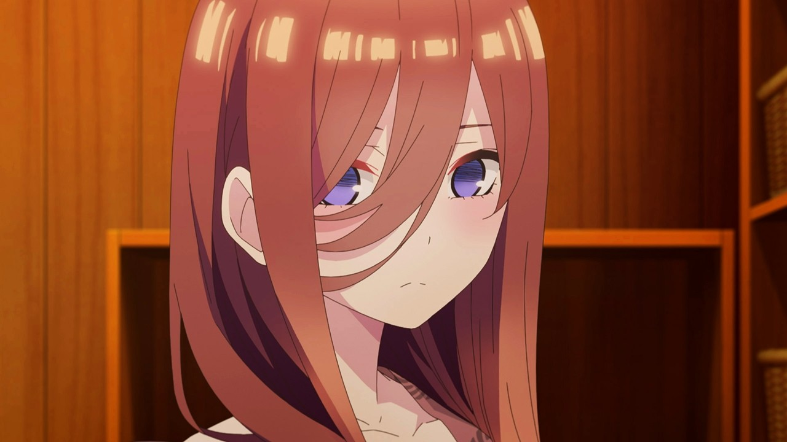

La familia Nakao
Miku
Es una de las personajes mas bonita que he visto. Su personalidad tal vez no le guste tanto porque puede ser; fria, un poco rara con sus gusto pero es divertidad. Pero sus hermanas puede ser un poco raras pero eso lo que hacer que el anime sea divertido

Nino
Es una de las personaje que su personalidad es un poco aterradora pero a pesar de eso puede llevarla a ser un poco cariñosa